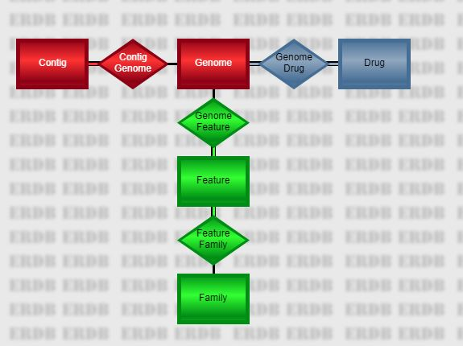

--------------------EVOLVING NOTES -------------------
The main PATRIC database is organized as a series of large, heavily-indexed relational tables. From the perspective of the CLI, there are five main tables representing objects of interest, connected by four relationships.
The five entities are as follows.
The PATRIC CLI operates on tab-delimited files. That is, each record is divided into fields or columns separated by tab characters. The first record in each file contains the name of each column. Typically, a column name consists of a record name, a dot, and a field name. For example, the following file fragment contains a column from the genome table followed by two columns from the feature table.
genome.genome_id feature.patric_id feature.product 670.470 fig|670.470.repeat.1 repeat region 670.470 fig|670.470.repeat.2 repeat region 670.470 fig|670.470.repeat.3 repeat region 670.470 fig|670.470.rna.1 tRNA-Ala 670.470 fig|670.470.rna.2 tRNA-Ile 670.470 fig|670.470.repeat.4 repeat region 670.470 fig|670.470.rna.3 16S ribosomal RNA 670.470 fig|670.470.repeat.5 repeat region 670.470 fig|670.470.rna.4 tRNA-Val 670.470 fig|670.470.rna.5 tRNA-Ala 670.470 fig|670.470.repeat.6 repeat region
The scripts are designed so they can be chained together in pipelines. For example, the above file was generated by the pipeline
p3-all-genomes --eq "genome_name,Vibrio parahaemolyticus" | p3-get-genome-features --attr patric_id --attr product
In this pipeline, the --eq command-line option was used to filter a query, while the
--attr option was used to specify the output columns and the order in which they appear. These
options are available on all of the database scripts.
By default, the last column in the input file is used as the key field for the get-type scripts. You can modify this
behavior using the --col command-line option. The special value 0 denotes the last column, but
you can also use a 1-based column number (1 for the first, 2 for the second) or a column name.
So, if you want to get location information from the features output by the pipeline above, you could use
p3-get-feature-data --col=feature.patric_id --attr sequence_id --attr location <input.tbl
where input.tbl is the above output file. Note that --col=2 would also work.
The special script p3-extract allows you to select columns from a file and even change the order. Thus, the following pipeline removes the genome ID from our file and puts the feature ID at the end before asking p3-get-feature-data for the location information.
p3-extract feature.product feature.patric_id <input.tbl | p3-get-feature-data --attr sequence_id --attr location
Because of the presence of the headings, many standard file-manipulation commands won't work the way you expect. We provide p3 scripts for several of the most common needs.
In this section we briefly discuss the main database scripts.
p3-all-genomes --eq genome_name,Streptomyceswould list all genomes in the genus Streptomyces. (That is, all genomes whose names start with that word.) The
--eq
parameter introduces an equality constraint. In PATRIC, string searches perform a substring match, which allows us to easily do
queries of this type. The various database commands all support the --eq option. In addition, you can specify
output fields using the --attr option. Thus,
p3-all-genomes --eq genome_name,Streptomyces --attr genome_id --attr genome_namewould output both the ID and name of each genome found, as shown below.
genome.genome_id genome.genome_name 284037.4 Streptomyces sporocinereus strain OsiSh-2 67257.17 Streptomyces albus subsp. albus strain NRRL F-4371 68042.5 Streptomyces hygroscopicus subsp. hygroscopicus strain NBRC 16556 68042.6 Streptomyces hygroscopicus subsp. hygroscopicus strain NBRC 13472 1395572.3 Streptomyces albulus PD-1 68570.5 Streptomyces albulus strain NK660 1160718.3 Streptomyces auratus AGR0001 749414.3 Streptomyces bingchenggensis BCW-1 66876.3 Streptomyces chattanoogensis strain NRRL ISP-5002 249567.6 Streptomyces decoyicus strain NRRL 2666To get a complete list of the available fields, use the
--fields option. Again, this is available for all the
database scripts described in this section.
p3-all-genomes --fields
p3-all-genomes --eq genome_name,Streptomyces | p3-get-genome-data --attr genome_name --attr contigs --attr genome_length
genome.genome_id genome.genome_name genome.contigs genome.genome_length 284037.4 Streptomyces sporocinereus strain OsiSh-2 125 10242506 67257.17 Streptomyces albus subsp. albus strain NRRL F-4371 307 9246299 68042.5 Streptomyces hygroscopicus subsp. hygroscopicus strain NBRC 16556 133 10141569 68042.6 Streptomyces hygroscopicus subsp. hygroscopicus strain NBRC 13472 680 9464604 1395572.3 Streptomyces albulus PD-1 425 9340057 68570.5 Streptomyces albulus strain NK660 9372401 1160718.3 Streptomyces auratus AGR0001 213 7825489 749414.3 Streptomyces bingchenggensis BCW-1 0 11936683 66876.3 Streptomyces chattanoogensis strain NRRL ISP-5002 217 9129105In actual fact, the use of p3-get-genome-data in the above pipeline is redundant, since p3-all-genomes supports the same command-line options. In practice, you will use p3-get-genome-data to process genome ID files created on a separate occasion or via other scripts that don't have the full power for p3-all-genomes.
p3-all-genomes --eq genome_name,Mycoplasma | p3-get-genome-features --attr patric_id --attr product
genome.genome_id feature.patric_id feature.product 1262907.4 fig|1262907.4.repeat.1 repeat region 1262907.4 fig|1262907.4.rna.1 SSU rRNA ## 16S rRNA, small subunit ribosomal RNA 1262907.4 fig|1262907.4.repeat.2 repeat region 1262907.4 fig|1262907.4.peg.1 Cysteinyl-tRNA synthetase related protein 1262907.4 fig|1262907.4.peg.2 hypothetical protein 1262907.4 fig|1262907.4.peg.3 hypothetical protein 1262907.4 fig|1262907.4.peg.4 ABC transporter, ATP-binding protein 1262907.4 fig|1262907.4.peg.5 Glycerol-3-phosphate dehydrogenase [NAD(P)+] (EC 1.1.1.94) 1262907.4 fig|1262907.4.peg.6 BH0638 unknown conserved protein 1262907.4 fig|1262907.4.peg.7 hypothetical proteinYou can use the
--fields option to list all the fields available in a feature record. In addition, you have
access to the usual filtering parameters-- --eq as well as --lt, --gt, --le,
--ge, and --ne. So, for example, the following command would restrict the features to CDS features
of at least 500 base pairs.
p3-all-genomes --eq genome_name,Mycoplasma | p3-get-genome-features --eq feature_type,CDS --ge na_length,500 --attr patric_id --attr product
p3-echo -t genome_id 28903.66 | p3-get-genome-contigs --attr sequence_id --attr sequenceThe output will have three columns, including the genome ID, the ID of the contig, and the actual DNA sequence (which can be quite long). Again, use the
--fields option to see which fields are available for output and filtering in the contig records.
p3-all-genomes --eq genome_name,Acinetobacter | p3-get-genome-drugs
genome.genome_id genome_drug.genome_id genome_drug.antibiotic genome_drug.resistant_phenotype 1409922.5 1409922.5 amikacin Resistant 1409922.5 1409922.5 gentamicin Resistant 1409922.5 1409922.5 tobramycin Resistant 1409922.5 1409922.5 imipenem Resistant 1409922.5 1409922.5 ceftazidime Resistant 1409922.5 1409922.5 ceftriaxone Resistant 1409922.5 1409922.5 aztreonam Resistant 1409922.5 1409922.5 ciprofloxacin Resistant 1409922.5 1409922.5 levofloxacin Resistant 1409922.5 1409922.5 tetracycline Resistant 1409922.5 1409922.5 cefepime Intermediate 1409923.3 1409923.3 amikacin Resistant 1409923.3 1409923.3 gentamicin Resistant
--fields option to see a list of all the
fields you can select. The default is to simply list the antibiotic name, as shown below.
p3-all-drugs
drug.antibiotic_name amikacin amoxicillin amoxicillin/clavulanic acid ampicillin ampicillin/sulbactam azithromycin aztreonam bacitracin capreomycin cefaclor cefazolin
p3-all-drugs | p3-get-drug-genomes --attr genome_id --attr genome_name --eq resistance_phenotype,resistant
drug.antibiotic_name genome_drug.genome_id genome_drug.genome_name amikacin 1304920.3 Klebsiella pneumoniae 361_1301 amikacin 1427177.3 Mycobacterium tuberculosis XTB13-081 amikacin 1427178.3 Mycobacterium tuberculosis XTB13-082 amikacin 1427180.3 Mycobacterium tuberculosis XTB13-084 amikacin 1427185.3 Mycobacterium tuberculosis XTB13-091 amikacin 1427191.3 Mycobacterium tuberculosis XTB13-097 amikacin 1427192.3 Mycobacterium tuberculosis XTB13-098 amikacin 1427193.3 Mycobacterium tuberculosis XTB13-100 amikacin 1427199.3 Mycobacterium tuberculosis XTB13-107 amikacin 1427200.3 Mycobacterium tuberculosis XTB13-108 amikacin 1427202.3 Mycobacterium tuberculosis XTB13-110 amikacin 1427204.3 Mycobacterium tuberculosis XTB13-112 amikacin 1427207.3 Mycobacterium tuberculosis XTB13-115
local, global, and figfam. The --ftype parameter specifies the type of family
desired. So, for example, the following pipeline finds the global family for the feature fig|1105121.3.peg.460 and
then lists the ID and product of each family member.
p3-echo -t feature_id "fig|1105121.3.peg.460" | p3-get-feature-data --attr pgfam_id | p3-get-family-features --ftype=global --attr patric_id --attr productNote that the features found are listed in the column feature.patric_id, while the original feature is maintained in the first column feature_id.
feature_id feature.pgfam_id feature.patric_id feature.product fig|1105121.3.peg.460 PGF_00112374 fig|1313.8637.peg.2087 hypothetical protein fig|1105121.3.peg.460 PGF_00112374 fig|1313.8636.peg.1563 hypothetical protein fig|1105121.3.peg.460 PGF_00112374 fig|1313.8645.peg.110 hypothetical protein fig|1105121.3.peg.460 PGF_00112374 fig|1313.12423.peg.2037 hypothetical protein fig|1105121.3.peg.460 PGF_00112374 fig|1330044.3.peg.533 hypothetical protein fig|1105121.3.peg.460 PGF_00112374 fig|1313.5699.peg.1778 hypothetical protein fig|1105121.3.peg.460 PGF_00112374 fig|1313.5750.peg.307 hypothetical protein fig|1105121.3.peg.460 PGF_00112374 fig|1313.5754.peg.739 hypothetical protein fig|1105121.3.peg.460 PGF_00112374 fig|1313.5758.peg.1823 hypothetical protein fig|1105121.3.peg.460 PGF_00112374 fig|1313.5781.peg.1819 hypothetical protein fig|1105121.3.peg.460 PGF_00112374 fig|1313.5778.peg.686 hypothetical protein fig|1105121.3.peg.460 PGF_00112374 fig|1313.5729.peg.1554 hypothetical protein
--fields option to list
the fields you can use for filtering and display. The following pipeline lists the function (product) and protein sequence of each peg of less
than 300 base pairs in the genome 1105121.3.
p3-echo -t genome_id 1105121.3 | p3-get-genome-features --lt na_length,300 --eq feature_type,CDS --attr patric_id | p3-get-feature-data --attr product --attr aa_sequence
genome_id feature.patric_id feature.product feature.aa_sequence 1105121.3 fig|1105121.3.peg.1487 BOX elements MKIKEQTRKLAASCSKHCFEVVDKTDEVSYIYNPRRR 1105121.3 fig|1105121.3.peg.1508 hypothetical protein MISTTYRNHRKRFGLRMNLIAEKVSKTLDKTFDKDVREIPTSQFYQKFVDEMGRTYSGNLILQELITVNGAYKATYIGELSSN 1105121.3 fig|1105121.3.peg.1557 hypothetical protein MKREVISNGNDGPSQEILIFTKQIRHWILSDQVISGKRKLFFREDTPKEILDLYENIKSKLDFAYQEVYSNNGLKKYEK 1105121.3 fig|1105121.3.peg.1598 BOX elements MKIKEQTRKLAAGCSKHCFEVVDRTDEVSNLHTARRR 1105121.3 fig|1105121.3.peg.1776 hypothetical protein MVASASASSTSTQAQEQVDKSELRALSQELDQRLKALATVSDPKIDATKAVLLDAQKAPEDSALTE 1105121.3 fig|1105121.3.peg.10 hypothetical protein MENLLDVIEQFLGLSDEKLEELADKNQLLRLQEEKERKNA 1105121.3 fig|1105121.3.peg.94 BOX elements MKIKEQTRKLAAGCSKHCFEVVDKTDEVSYIYLRQGEADAV 1105121.3 fig|1105121.3.peg.220 Ribonucleotide reductase of class III (anaerobic), large subunit (EC 1.17.4.2) MVKRTCGYLGNPQARPMVNGRHKEIAARVKHMNGSTIKIAGHQVTN 1105121.3 fig|1105121.3.peg.228 LSU ribosomal protein L23p (L23Ae) MNLYDVIKKPVITESSMAQLEAGKYVFEVDTRAHKLLIKQAVEAAFEGVKVANVNTINVKPKAKRVGRYTGFTNKTKKAIITLTADSKAIELFAAEAE 1105121.3 fig|1105121.3.peg.230 SSU ribosomal protein S19p (S15e) MGRSLKKGPFVDEHLMKKVEAQANDEKKKVIKTWSRRSTIFPSFIGYTIAVYDGRKHVPVYIQEDMVGHKLGEFAPTRTYKGHAADDKKTRRK
Users of PATRIC have access to a wealth of public data that support interpretation of prokaryotic genomes. The PATRIC team actively integrates newly-sequenced genomes, data relating to antimicrobial resistance, expression data, pathway data and subsystem data into an integrated framework that can be queried using either the PATRIC UI or the CLI.
In the PATRIC UI, your workspace looks a lot like a standard file system, divided into folders full of data. In addition to files you upload, such as FASTA and FASTQ files, there will also be typed objects such as genomes, feature groups, and genome groups. The CLI allows you to move these typed objects between your workspace and your file system so you can manipulate them at will.
To access your workspace, you need a PATRIC account. If you do not have one already, go to https://user.patricbrc.org/register and register now.
Now that you have a working user name and password, you can use the p3-login script to
tell the CLI who you are. For example, if your name is rastuser25, you would type
p3-login rastuser25
The script asks you for your password and places a special file on your hard drive that can be used to get authorized access to your workspace data. To log out again, simply use
p3-login --logout
At any time, you can verify your login status using
p3-login --status
If you are logged out, it will respond
You are currently logged out of PATRIC.
If you are logged in, you will get something like
You are logged in as rastuser25@patricbrc.org.
Your workspace looks like a full-blown file system, but there are three special folders.
To create a genome group, you use p3-put-genome-group. Say, for example, you want to examine Streptococcus penumoniae genomes that are resistant to penicillin. The following query command will return this list of genomes (we will discuss all query commands in more details later).
p3-echo -t antibiotic penicillin | p3-get-drug-genomes --eq "genome_name,Streptococcus pneumoniae" --eq resistant_phenotype,resistant --attr genome_id --attr genome_name >resist.tbl
This particular
command asks for data from the anti-microbial resistance table. Each record in this table posits a relationship
between a genome and an antibiotic drug. We are accessing the table from the direction of taking a drug and finding
resistant genomes. To do this, we need a file with a drug name in it. The p3-echo command creates this file:
the -t antibiotic parameter tells it we want a one-column file with a column header of antibiotic.
We put the single record penicillin in that column.
The antibiotic file is then piped into p3-get-drug-genomes. Its parameters do the following.
--eq "genome_name,Streptococcus pneumoniae"Streptococcus pneumoniae strain LMG2888)
will still match.--eq resistant_phenotype,resistant--attr genome_id--attr genome_nameWhen the command completes, the file resist.tbl will contain around 114 lines beginning with the following.
antibiotic genome_drug.genome_id genome_drug.genome_name penicillin 1313.7006 Streptococcus pneumoniae P310010-154 penicillin 1313.7016 Streptococcus pneumoniae P310937-212 penicillin 1313.7018 Streptococcus pneumoniae P311313-217 penicillin 760749.3 Streptococcus pneumoniae GA05248 penicillin 760763.3 Streptococcus pneumoniae GA11304 penicillin 760765.3 Streptococcus pneumoniae GA11663 penicillin 760766.3 Streptococcus pneumoniae GA11856 penicillin 760769.3 Streptococcus pneumoniae GA13338 penicillin 760771.3 Streptococcus pneumoniae GA13455 penicillin 760776.3 Streptococcus pneumoniae GA14373 penicillin 760777.3 Streptococcus pneumoniae GA14688
Now we want to create a group for these genomes called resist_strep. We use the following command.
p3-put-genome-group --col=2 resist_strep <resist.tbl
The --col=2 tells the command that the genome IDs are in the second column. The genome group is simply
a set of genome IDs, so the other columns will be ignored by the command. You can read the group back at any time
using p3-get-genome-group.
p3-get-genome-group resist_strep
Will output
resist_strep.genome_id 1313.7006 1313.7016 1313.7018 760749.3 760763.3 760765.3 760766.3 760769.3 760771.3
and so on. Note that if you want to see the names as well, you can use the p3-get-genome-data command to add them
p3-get-genome-group resist_strep | p3-get-genome-data --attr genome_name
resist_strep.genome_id genome.genome_name 1313.7006 Streptococcus pneumoniae P310010-154 1313.7016 Streptococcus pneumoniae P310937-212 1313.7018 Streptococcus pneumoniae P311313-217 760749.3 Streptococcus pneumoniae GA05248 760763.3 Streptococcus pneumoniae GA11304 760765.3 Streptococcus pneumoniae GA11663 760766.3 Streptococcus pneumoniae GA11856 760769.3 Streptococcus pneumoniae GA13338 760771.3 Streptococcus pneumoniae GA13455 760776.3 Streptococcus pneumoniae GA14373 760777.3 Streptococcus pneumoniae GA14688
Next we will ask for the genomes that are susceptible to penicillin. We use the same command as before except we put
susceptible in place of resistant. We're going to pipe the results directly into
p3-put-genome-group to store them in our workspace.
p3-echo -t antibiotic penicillin | p3-get-drug-genomes --eq "genome_name,Streptococcus pneumoniae" --eq resistant_phenotype,susceptible --attr genome_id --attr genome_name | p3-put-genome-group --col=2 weak_strep
Now when you ask for the group back, you would get something like the following.
p3-get-genome-group weak_strep
weak_strep.genome_id 1313.6939 1313.6941 1313.6942 1313.6944 1313.6947 1313.7001 1313.7002 1313.7007 1313.7009
We want to look at features in the resistant Streptococcus pneumoniae genomes that distinguish them from the susceptible ones. Then we will gather those features into a feature group and store them in our workspace so we can work with them later. We already have our resistant group in a file called resist.tbl. We will use the p3-get-genome-group command to pull the susceptible genomes out of our workspace and pipe it into p3-signature-families, which counts and compares protein families.
p3-get-genome-group weak_strep | p3-signature-families --gs1=resist.tbl >families.tbl
The p3-signature-families script asks for two sets of genome IDs as input, specified as file names using the command-line parameters --gs1 (interesting set) and --gs2 (other set). The output contains protein families that are common in the interesting set but not in the other set. (For convenience, any genomes in the interesting set are removed from the other set before processing.) If a set file is not specified, it is taken from the standard input. In this case, that would be the other set, since there is no --gs2 parameter. That is piped in from the p3-get-genome-group command.
Our signature families analysis script yields four protein families, displayed in the following output.
counts_in_set1 counts_in_set2 family.family_id family.product 92 10 PGF_00112374 hypothetical protein 92 10 PGF_00303700 hypothetical protein 92 10 PGF_03497231 hypothetical protein 91 10 PGF_03497236 hypothetical protein
The next step is to convert the families into feature IDs. The p3-get-family-features script performs that function. We will use the following command.
p3-get-family-features --gFile=resist.tbl --gCol=1 --ftype=global --col=family.family_id <families.tbl
The parameters work as follows.
family.family_id.The output looks something like this.
counts_in_set1 counts_in_set2 family.family_id family.product feature.patric_id feature.feature_type feature.location feature.product 92 10 PGF_00112374 hypothetical protein fig|1313.5465.peg.1094 CDS complement(6450..9101) hypothetical protein 92 10 PGF_00112374 hypothetical protein fig|1313.5418.peg.2058 CDS complement(6450..9101) hypothetical protein 92 10 PGF_00112374 hypothetical protein fig|1313.5645.peg.1124 CDS 3518..6169 hypothetical protein 92 10 PGF_00112374 hypothetical protein fig|1069623.3.peg.450 CDS 391076..393727 hypothetical protein 92 10 PGF_00112374 hypothetical protein fig|1313.6729.peg.1445 CDS 32402..35053 hypothetical protein 92 10 PGF_00112374 hypothetical protein fig|1313.6728.peg.1682 CDS complement(6420..9071) hypothetical protein 92 10 PGF_00112374 hypothetical protein fig|1313.6723.peg.2045 CDS 297..2948 hypothetical protein 92 10 PGF_00112374 hypothetical protein fig|760766.3.peg.438 CDS 293743..296403 hypothetical protein 92 10 PGF_00112374 hypothetical protein fig|1313.6724.peg.811 CDS 32400..35051 hypothetical protein
We didn't tell p3-get-family-features what attributes of the features to display, so it defaulted to ID, type, location, and functional assignment (product). We don't have time to examine these features in detail now, but we can put them in a feature group by piping them into p3-put-feature-group as follows.
p3-get-family-features --gFile=resist.tbl --gCol=1 --ftype=global --col=family.family_id <families.tbl | p3-put-feature-group --col=feature.patric_id resist_fids
In the p3-put-feature-group command, the --col=feature.patric_id parameter tells the command
that the feature IDs are in the column with that heading, and resist_fids is the group name. When you
decide to examine the features in greater detail, you can pull back the feature IDs using p3-get-feature-group.
p3-get-feature-group resist_fids
The output will look something like this.
resist_fids.patric_id fig|1105121.3.peg.460 fig|1069626.3.peg.432 fig|1313.6771.peg.1961 fig|1313.5503.peg.1279 fig|1313.5634.peg.1224 fig|1069624.3.peg.437 fig|1069628.3.peg.451 fig|1313.5669.peg.1163 fig|1313.6725.peg.2115
At any time, you can get a complete list of the groups in your workspace using the p3-list-genome-groups command or the p3-list-feature-groups command. So, if you have been following along the above examples and your workspace was empty before you began, you would see the following.
p3-list-genome-groups
resist_strep weak_strep
p3-list-feature-groups
resist_fids
There are a growing number of PATRIC apps, and you will be able to use many of them via the CLI. To illustrate how, we show you how to assemble collections of reads into contig, and how to annotate one or more genomes (hundreds at a time, if you wish).
The assembly app allows you to take one or more files of DNA reads and produce an output file containing DNA contigs. The exact steps one would use to assemble reads are as follows:
example commands following exactly what is shown in the previous section
more example commands
The PATRIC app that can be used to annotate a genome takes as input
It produces as output a Genome Type Object (GTO). This object contains all of the data created during the annotation. You can download a GTO to your machine and then use p3-scripts to extract data from the GTO. Here is an example of how to download the output GTO and get a listing of the features identified in the annotations.
downloading example
You can do a great deal more with the CLI than just run PATRIC apps -- you can extract a large and growing body of data that you may well find useful in studying organisms and their genomes. Above we listed the five entities that contain PATRIC data and the scripts for navigating them.
============== Evolving NotesThe P3-scripts interface reflects an underlying ERDB. The initial implemenation will offer access to the following entities:
p3-get-Genome-data SearchFor FieldsToExtract
id is always default field
Here SearchFor encodes a set of search contraints.
FieldsToExtract encodes a list of desired attributes.
For important relationships, we use things like
p3-Genome2Drug SearchFor FieldsToExtract
tail ``-n+2'' | sortto print the sorted contexts of the file. There will be P3-scripts corresponding to at least the following UNIX tools:
p3-all-genomes --equal genus,Streptococcus --count genome.count 11475
p3-all-genomes --equal genus,Streptococcus --attr genome_name --attr genome_length
p3-all-genomes --equal genome_name,Staphylococcus –count genome.count 10634 p3-echo -t antibiotic methicillin | p3-get-drug-genomes --equal resistant_phenotype,resistant --equal genome_name,Staphylococcus --count antibiotic genome_drug.count methicillin 1064
Which protein family is fig|46170.310.peg.738 in? p3-echo -t feature.feature_id "fig|46170.310.peg.738" | p3-get-feature-data --attr pgfam_id feature.feature_id feature.pgfam_id fig|46170.310.peg.738 PGF_00040464
Which roles does fig|46170.310.prh.738 implement? p3-echo -t feature.feature_id "fig|46170.310.peg.738" | p3-get-feature-data --attr product feature.feature_id feature.product fig|46170.310.peg.738 Putative cysteine desulfurase, associated with tRNA 4-thiouridine synthase
p3-echo -t genome.genome_id 46170.310 | p3-get-genome-drugs --equal resistant_phenotype,resistant --attr antibiotic genome.genome_id genome_drug.antibiotic 46170.310 ciprofloxacin 46170.310 erythromycin 46170.310 gentamicin 46170.310 methicillin 46170.310 penicillin 46170.310 trimethoprim/sulfamethoxazole
p3-echo -t antibiotic,erythromycin | p3-get-drug-genomes --equal resistant_phenotype,resistant --attr genome_id --attr genome_name antibiotic genome_drug.genome_id genome_drug.genome_name erythromycin 1280.4920 Staphylococcus aureus P210110-35 erythromycin 1280.4930 Staphylococcus aureus P210184-226 erythromycin 1280.4940 Staphylococcus aureus P210369-10 erythromycin 1280.4960 Staphylococcus aureus P210464-28 erythromycin 1280.4970 Staphylococcus aureus P310372-198 erythromycin 1280.4990 Staphylococcus aureus P311202-207 erythromycin 1313.6942 Streptococcus pneumoniae P110340-157 erythromycin 1313.7001 Streptococcus pneumoniae P210774-233
p3-echo -t f1.patric_id -t f2.patric_id "fig|1302.21.peg.966" "fig|1302.21.peg.1019" | p3-feature-gap
f1.patric_id f2.patric_id gap
fig|1302.21.peg.966 fig|1302.21.peg.1019 55253
p3-echo -t f1.patric_id -t f2.patric_id "fig|1302.21.peg.966" "fig|1302.21.peg.1019" | p3-feature-gap
f1.patric_id f2.patric_id gap
fig|1302.21.peg.966 fig|1302.21.peg.1019 55253
p3-genome-fasta 1302.21
p3-genome-fasta --protein 1302.21
p3-get-genome-features --attr sequence_id --attr location --attr product <genomes.tbl | p3-function-to-role | p3-generate-close-roles